BF03 — Home Loan EMI: Shuruaati EMI Mein Zyada Interest Kyun Jata Hai?
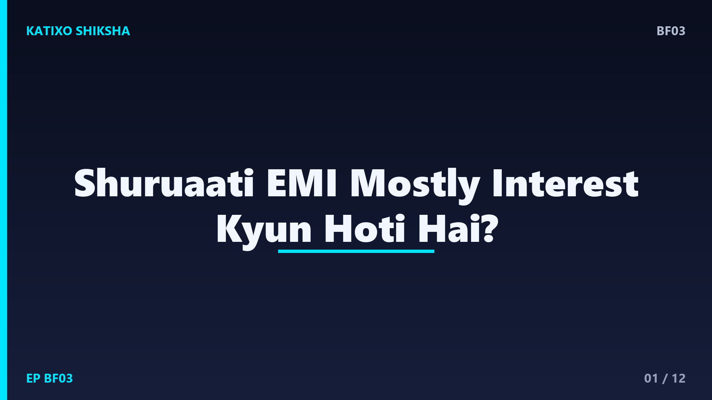
Slide 1दोस्तों, घर खरीदना ज़्यादातर लोगों का सबसे बड़ा सपना होता है, और इसके लिए लेना पड़ता है home loan. फिर शुरू होती है हर महीने की EMI. पर एक बात बहुत लोगों को चौंका देती है — शुरू के सालों में जो EMI भरते हो, उसका बड़ा हिस्सा तो सिर्फ़ ब्याज में चला जाता है, असली loan बहुत कम घटता है। ऐसा क्यों? आज Katixo KhojLab की इस finance explainer में हम EMI का पूरा गणित आसान भाषा में, एक real example के साथ समझेंगे। चलो शुरू करें।
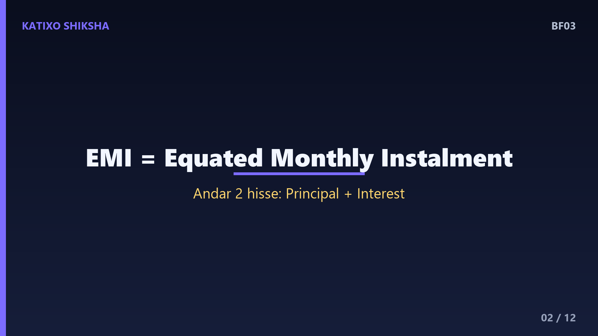
Slide 2सबसे पहले — EMI है क्या? EMI का मतलब है Equated Monthly Instalment, यानी बराबर मासिक किस्त। जब आप bank से loan लेते हो, तो आप उसे एक तय समय में, हर महीने एक fixed amount देकर चुकाते हो। ये amount हर महीने एक जैसा रहता है, इसीलिए इसे equated यानी बराबर कहते हैं। पर यहाँ twist ये है — हर EMI के अंदर दो हिस्से छुपे होते हैं। एक हिस्सा होता है principal, यानी असली loan की रकम, और दूसरा हिस्सा होता है interest, यानी ब्याज।
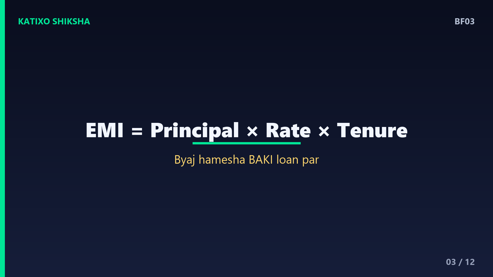
Slide 3अब EMI तीन चीज़ों पर depend करती है — principal यानी कितना loan लिया, interest rate यानी ब्याज की दर, और tenure यानी कितने साल में चुकाना है। मोटा नियम — जितना बड़ा loan और जितना ज़्यादा rate, उतनी बड़ी EMI। और जितना लंबा tenure, उतनी छोटी monthly EMI, पर कुल ब्याज उतना ज़्यादा। ब्याज हमेशा बची हुई loan रकम पर लगता है, जिसे outstanding principal कहते हैं। यही एक चीज़ पूरी कहानी समझने की चाबी है, इसे ध्यान से याद रखना।
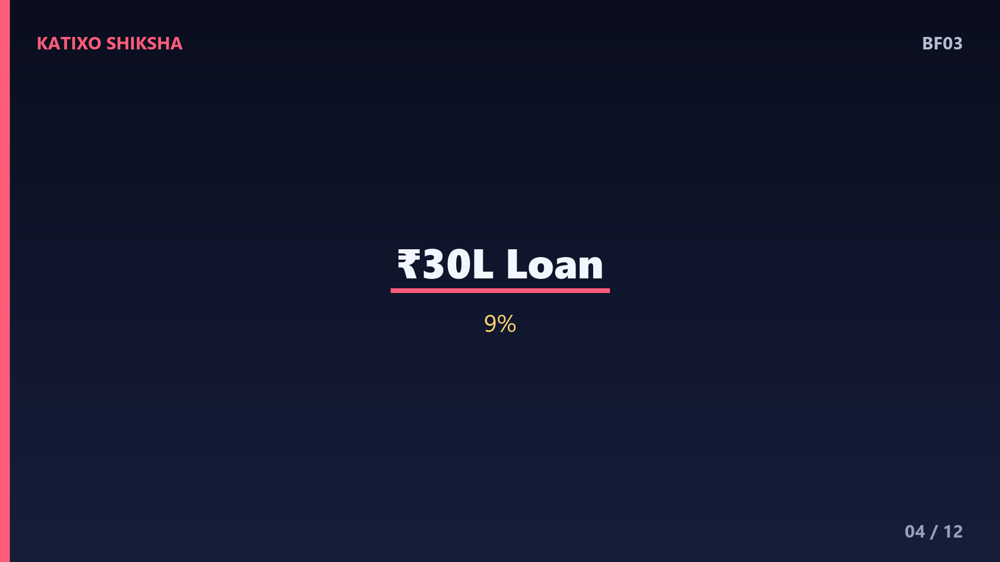
Slide 4अब एक concrete example लेते हैं। मान लो आपने लिया 30 लाख रुपये का home loan, ब्याज दर 9 प्रतिशत सालाना, और tenure 20 साल। इस हिसाब से आपकी EMI बनती है लगभग 26 हज़ार 992 रुपये हर महीने। यानी आप 20 साल तक हर महीने करीब सत्ताईस हज़ार रुपये देंगे। अब सवाल — इन सत्ताईस हज़ार में से कितना ब्याज है और कितना असली loan? यही समझने के लिए हमें देखना होगा कि bank ब्याज कैसे लगाता है, हर महीने।
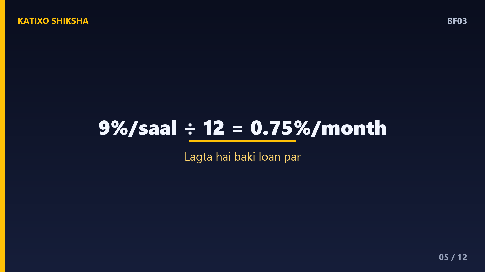
Slide 5ब्याज की दर सालाना होती है, पर EMI महीने की, तो पहले rate को महीने में बदलते हैं। 9 प्रतिशत सालाना को 12 से भाग दो, तो हुआ 0.75 प्रतिशत हर महीने। अब हर महीने bank देखता है — आपके ऊपर अभी कितना loan बाकी है, और उस बाकी रकम पर ये 0.75 प्रतिशत ब्याज लगाता है। शुरू में पूरा 30 लाख बाकी है, इसीलिए शुरू में ब्याज सबसे ज़्यादा बनता है। जैसे-जैसे loan घटता है, ब्याज भी घटता जाता है। यही है पूरे खेल की जड़।
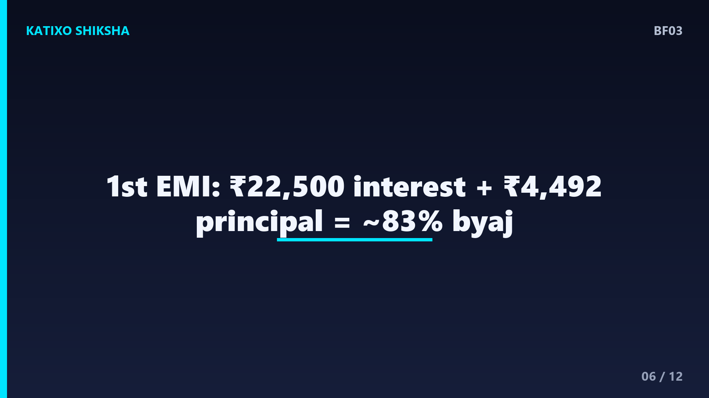
Slide 6अब पहली EMI को तोड़कर देखते हैं। पहले महीने बाकी loan है पूरे 30 लाख। उस पर 0.75 प्रतिशत ब्याज हुआ 22 हज़ार 500 रुपये। आपकी पूरी EMI है लगभग 26 हज़ार 992. तो इसमें से 22 हज़ार 500 तो सिर्फ़ ब्याज में गया, और असली loan सिर्फ़ करीब 4 हज़ार 492 रुपये घटा। यानी पहली EMI का लगभग 83 प्रतिशत हिस्सा सिर्फ़ ब्याज था। चौंक गए ना? इसीलिए लोग कहते हैं — शुरू के सालों में EMI ज़्यादातर ब्याज ही होती है।
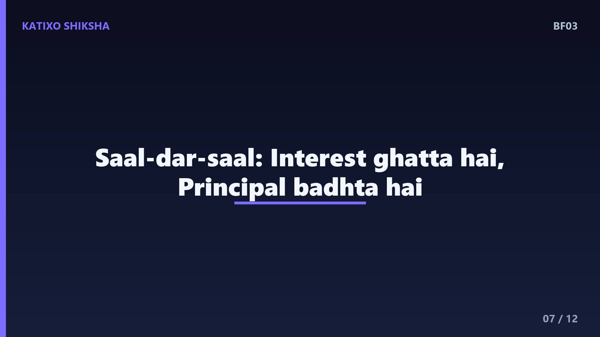
Slide 7अब आगे क्या होता है? अगले महीने आपका बाकी loan थोड़ा कम हुआ, तो उस पर लगने वाला ब्याज भी थोड़ा कम होगा, और principal का हिस्सा थोड़ा बढ़ेगा। हर महीने ये धीरे-धीरे बदलता है — ब्याज वाला हिस्सा घटता जाता है और principal वाला हिस्सा बढ़ता जाता है, जबकि कुल EMI same रहती है। इसी पूरे हिसाब के chart को amortisation schedule कहते हैं। शुरू में ब्याज भारी, बीच में बराबरी, और आख़िरी सालों में लगभग पूरी EMI आपके असली loan को घटाती है।
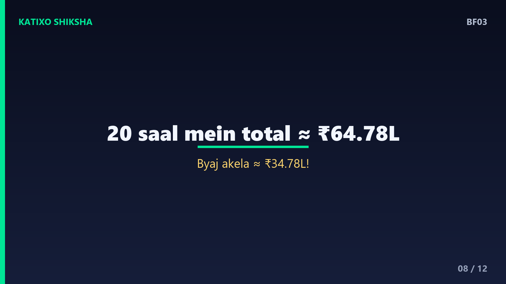
Slide 8अब असली झटका — कुल मिलाकर आप कितना देते हो। इस 30 लाख के loan पर 20 साल में आपकी कुल EMI जुड़कर बनती है लगभग 64 लाख 78 हज़ार रुपये। यानी 30 लाख असली loan, और बाकी करीब 34 लाख 78 हज़ार सिर्फ़ ब्याज! आपने जितना loan लिया, उससे भी ज़्यादा तो ब्याज में चला गया। यही वजह है कि home loan को समझदारी से चुनना और जल्दी निपटाना इतना मायने रखता है। ये numbers डराने के लिए नहीं, जागरूक करने के लिए हैं।
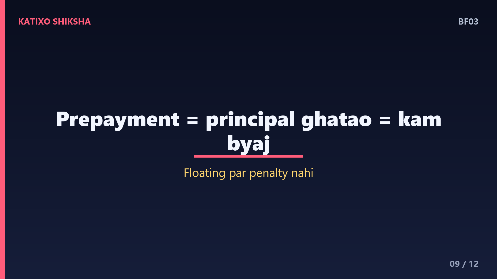
Slide 9तो बचत कैसे करें? सबसे powerful तरीका है prepayment, यानी बीच-बीच में थोड़ा extra पैसा देकर अपना principal घटाना। याद रखो, ब्याज तो बची हुई रकम पर लगता है, तो जितनी जल्दी principal घटाओगे, उतना कम ब्याज लगेगा। एक practical tip — साल में एक बार, बोनस या बचत से, एक extra EMI के बराबर prepayment कर दो, और कोशिश करो कि ये पैसा सीधे principal में जाए। RBI के नियम के मुताबिक़ floating rate home loan पर prepayment पर आम तौर पर कोई penalty नहीं लगती।
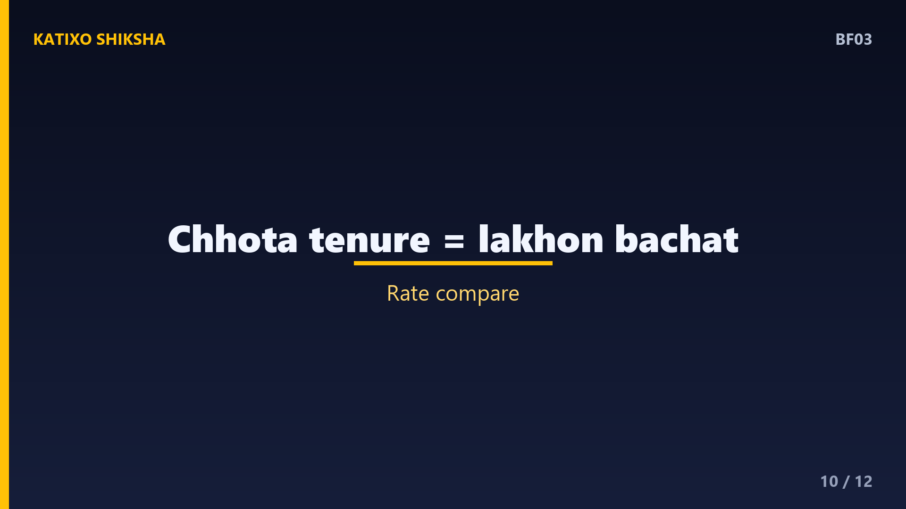
Slide 10दो और ज़रूरी बातें। पहली — tenure पर सोच-समझकर फैसला करो। लंबा tenure EMI तो छोटी कर देता है, पर कुल ब्याज बहुत बढ़ा देता है। अगर आप थोड़ी बड़ी EMI झेल सकते हो, तो छोटा tenure चुनो, लाखों बचेंगे। दूसरी — interest rate की तुलना करो और floating बनाम fixed समझो। Floating rate RBI की दरों के साथ ऊपर-नीचे होता है। अगर कहीं और कम rate मिल रहा हो, तो loan को दूसरे bank में shift करना, जिसे balance transfer कहते हैं, भी एक option है।
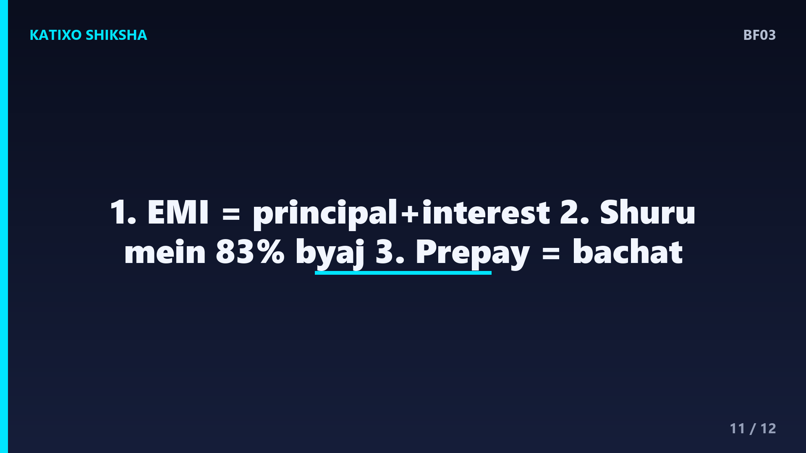
Slide 11तो चलो एक quick recap करते हैं, तीन points में। एक — हर EMI के दो हिस्से होते हैं, principal और interest, और ब्याज हमेशा बची हुई loan रकम पर लगता है। दो — शुरू में बाकी loan सबसे ज़्यादा होता है, इसलिए शुरुआती EMI का बड़ा हिस्सा ब्याज में जाता है, हमारे example में पहली EMI का लगभग 83 प्रतिशत। तीन — prepayment और छोटा tenure आपको लाखों रुपये का ब्याज बचा सकते हैं, इसलिए मौक़ा मिले तो principal जल्दी घटाओ।
Slide 12तो दोस्तों, अब जब आप home loan लोगे, तो EMI के पीछे का गणित आपको पता होगा — और आप अंधाधुंध नहीं, समझदारी से फैसला लोगे। थोड़ा सा prepayment और सही tenure आपके सपनों के घर को लाखों रुपये सस्ता बना सकता है। loan लेने से पहले हमेशा EMI calculator से numbers ज़रूर देख लो। Aisi aur simple finance explainers ke liye Katixo KhojLab ko subscribe karein! मिलते हैं अगले episode में। Ye general educational info hai, financial advice nahi.